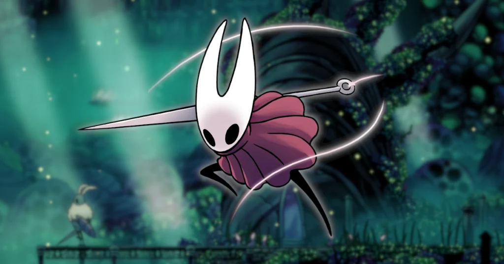
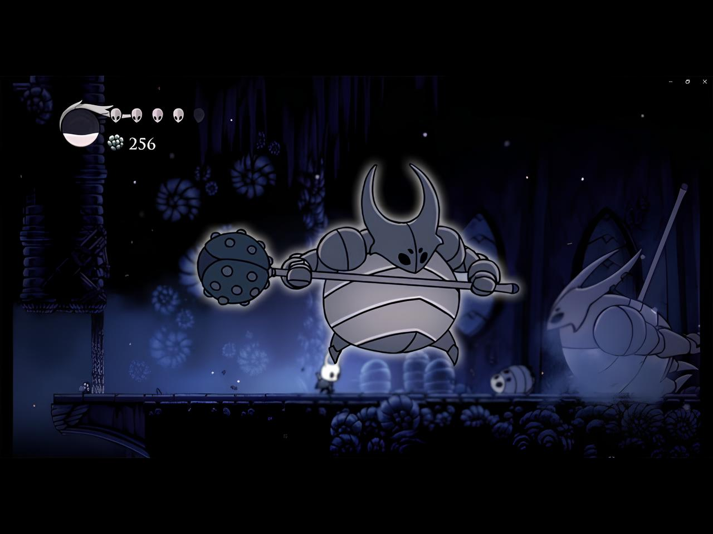
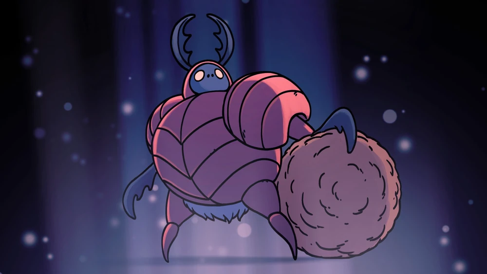
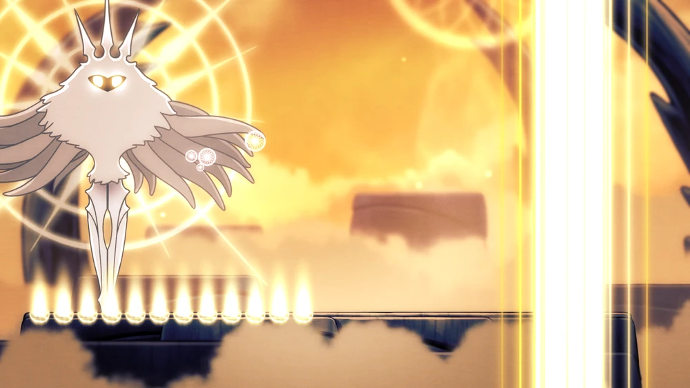
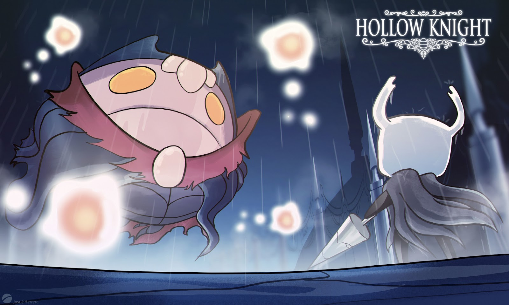

|  |
Хорнет |
Зеленая тропа |
Хорнет — загадочный персонаж, появляющийся на пути несколько раз. Её история тесно связана с судьбой королевства. |
|  |
Ложный Рыцарь |
Город Слез |
Огромный бронированный босс с мощными атаками и двойной фазой. |
|  |
Навозный защитник |
Королевские стоки |
Комичный босс, живущий в канализации и атакующий комками грязи. |
|  |
Лучезарность |
Дворец Белого Короля (в конце игры) |
Сложнейший босс, представляющий собой источник Заражения, центральный антагонист игры. |
|  |
Мастер душ |
Чёрное Ядро |
Могущественный магический босс, управляющий душами, с опасными заклинаниями и дальними атаками. |